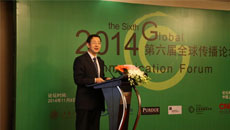
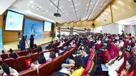

学院新闻
香港漆宝集团对上海交大捐赠签约仪式在媒体大楼举行
香港漆宝国际集团对上海交通大学的公益捐赠签约仪式于2014年11月13日下午在媒体大楼举行。常务副书记郭新立向捐赠方代表漆宝集团副总裁姚传远先生赠送了捐献证书。媒体与设计学院院长李本乾教授、传播系教师王积龙副教授等参加了签约仪式。
新型城镇化与中国城市发展模式的人文转型——上海交大发布《中国都市化进程报告2014》
2014年11月9日，在2014上海交通大学大学城市科学秋季论坛上，《中国都市化进程报告2014》由教育部《中国都市化进程年度报告》课题组、上海交通大学城市科学研究院向社会发布。上海交通大学党委宣传部部长胡昊主持了发布会。

互联网与中国20年：变革与创新——上海交通大学召开第六届全球传播论坛
第六届全球传播论坛于2014年11月9日在上海成功召开。论坛由上海交大主办，全球传播研究院、媒体与设计学院承办，中央人民广播电台、美国普渡大学、哥本哈根商学院、国际传播学会（ICA）协办。
媒设学院召开全院党员代表大会选举上海交大第十次党代会代表
2014年11月5日下午，上海交通大学媒体与设计学院在媒设大楼B407大会议室召开全院党员代表大会，选举出席中共上海交通大学第十次党员代表大会代表。学院党委书记单世联等共计62名教职工和学生党员代表出席。大会由学院党委副书记殷洁瑾主持。

上海交通大学-国际传播学会（ICA）2014新媒体峰会在我校举办
2014年10月25日，上海交通大学在上海召开了国际传播学会（ICA）2014新媒体峰会，以“大传播大融合：新媒体传播的机遇与挑战”为主题，重点探讨大数据时代新闻传播产业的融合发展。